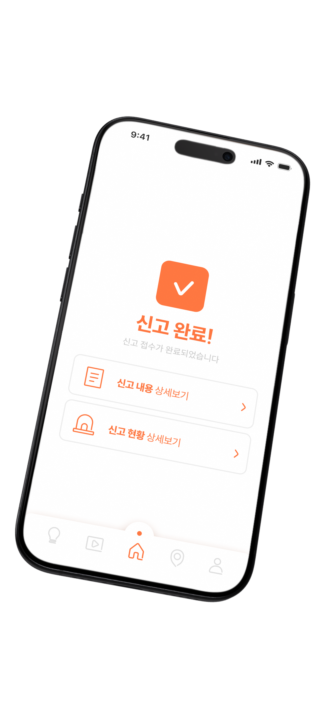
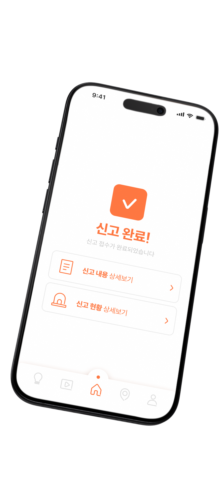
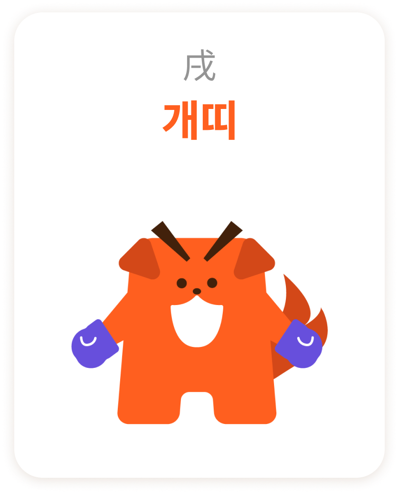
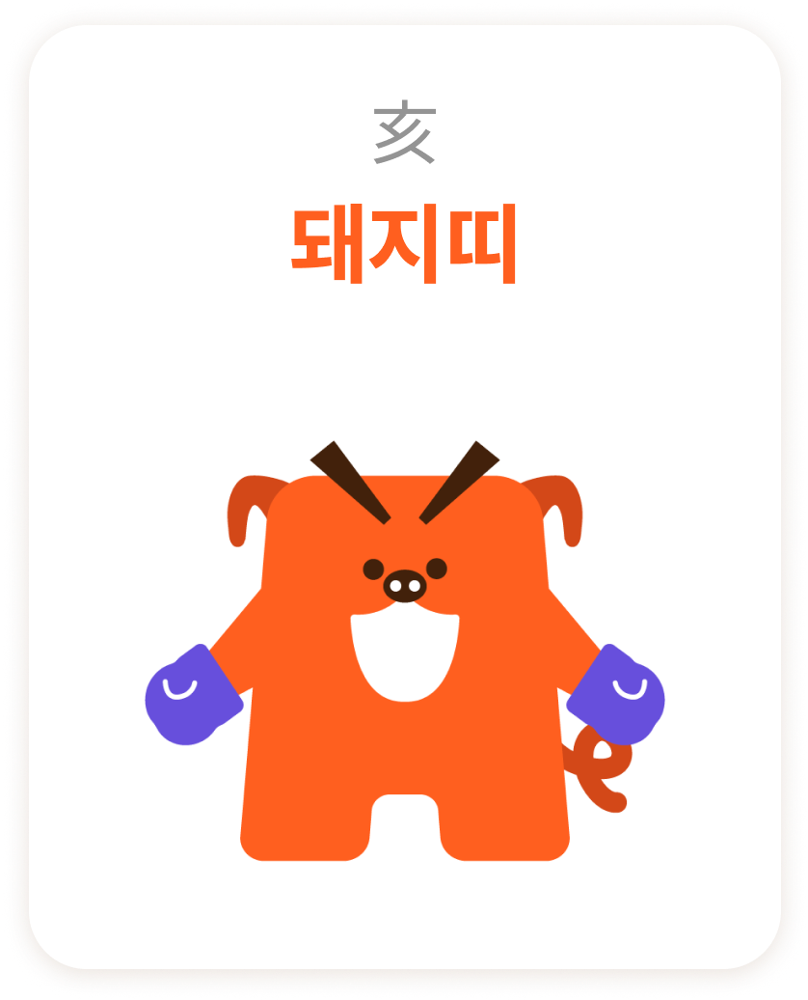
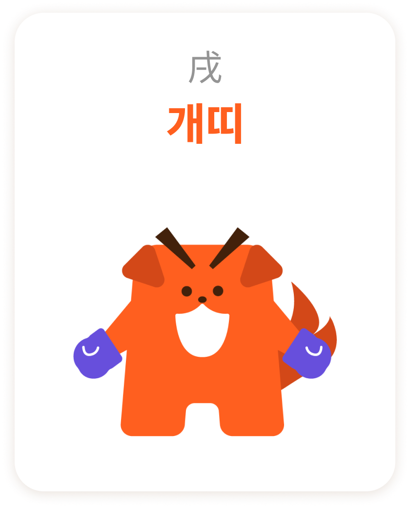
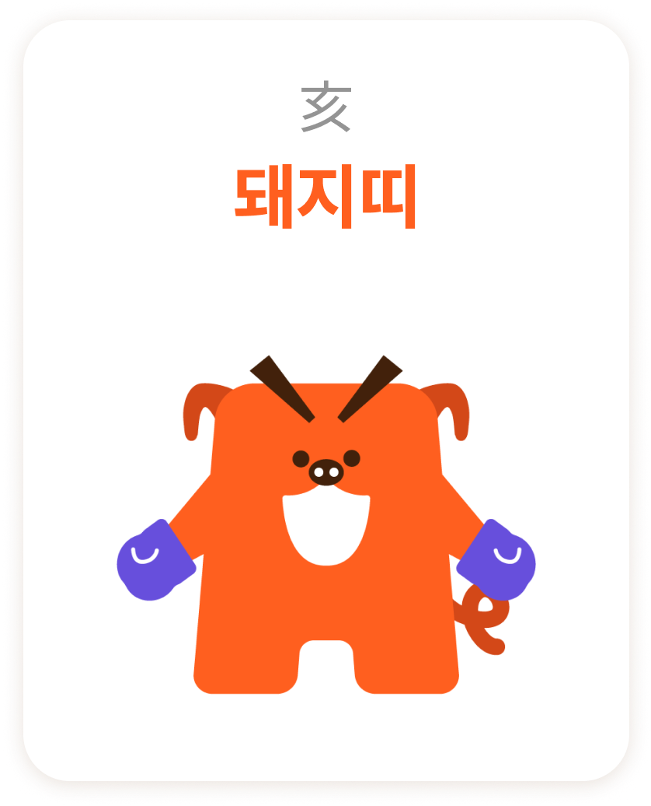

사다리
일상과
안전을 연결하다
크고 작은 위험들로부터
당신의 일상과 안전을 이어줄 사다리
사다리
일상과
안전을 연결하다
크고 작은 위험들로부터
당신의 일상과 안전을 이어줄 사다리
 

점점 더 증가하고 있는 일상 속 위험,
여러분은 안전하신가요?
사고 예방에 대한 지식이 미흡하고 관심을 가지지 않는 등
안전불감증 문제가 심각해 안전 사고로 인한 인명피해와 위험이 나날이 늘어나고 있어요.
일상 속 위험의
예방부터
대처까지!
Trend Research
안전불감증,
왜 위험한가요?
하인리히 사고 피라미드에 따르면 사망사고가 1건 나기 전에
중대사고 30번, 경미한 사고 300번, 아차사고 3000번
그리고 불안전한 행동 혹은 상태가 30만번 발생한다고 해요.
Q. 무단횡단, 즉 불안전 행동을 1번 할 때마다
경미한 사고가 난다면 무단횡단을 하는 사람이 많을까요?
확률에 따르면, 무단횡단을 한 번 한다고 사고를 겪진 않죠.
하지만 이때 위험 지각이 경험을 통해 낮아지고,
위험을 경계하지 않게되면서 안전 불감증과 사고로 이어지게 돼요.


사망
중대 사고
경미한 사고
아차 사고
불안전 행동&상태
안전불감증은
어떻게 사고로 이어질까요?
안전 교육을 통해 사람들은 위험을 이해하고
예측할 수 있는 능력을 키웁니다.
지식이 부족하거나 경험이 없는 경우,
위험을 가볍게 여기는 경향이 있어
안전 불감증으로 이어질 수 있습니다.
결과적으로,
안전 교육은 안전 불감증을 예방하고
안전 의식을 높이는 데 중요한 역할을 합니다.
계속해서 증가하는
안전사고로 인한 인명피해
2022
2021
2020
부상+실종 / 사망
화재
감전
수난
등산+생활체육
자전거
User Research
안전불감증에 대한 인식과 일상 속 위험을 어떻게 생각할까요?
수도권에 거주하는 1060대 남녀 57명에게 설문조사를 진행했어요.
Q.현재 한국의 안전불감증은 어느정도라고 생각하시나요?
Q.안전불감증으로 인해 발생한 사고를 목격 혹은 미디어
매체를 통해
접한 적이 있으신가요?
아니오
34(51.8%)
예
22(39.3%)
Q.안전사고에서 돌발 상황이 발생한다면 어떻게 대처하실 것 같나요?
Q.1년 이내 안전교육을 받으신 적이 있나요?
아니오
34(51.8%)
예
22(39.3%)
Q.어떤 사고였는지 설명해주실 수 있다면 작성해주세요
Q.안전교육 및 사고대처, 예방 등의 유사 서비스를 접한 적이 있으신가요?
아니오
34(51.8%)
예
22(39.3%)
안전과 관련된 기본 정보 얻음
안전불감증의 심각성을 해결
사고 발생 시 당황하지 않게 미리 대처 방법에 대해 공부
부담스럽지 않게 안전 정보 습득
효율적인 시간 사용으로 안전 정보 얻음
하나의 앱에서 안전 관련 모든 정보 제공
신뢰하고 차별적인 방식으로 안전불감증 인식 개선 및 해결
10-20대
실제 액티브한
활동을 많이 함
30-40대
어린 아이를
양육하는 세대
50-60대
안전 및 건강에
민감한 세대
Project Goal
일상 속 만약을 방지할 수 있도록 모두에게 안전을 알리는 서비스
일상과 안전을 연결하다
일상과 안전을 이어주는 역할을 한다는 것에 초점을 맞춰 원하는 곳에
닿는 데에 도움이 되는 역할을 하는 ‘사다리’로 네이밍을 선정하였습니다
Project Strategy
Persona & Journey Map
24세/남/대학생
#운동 #SNS #효율성 #재미
“정말 세상엔 재미있는 일들이 많은 것 같아요.
그런데 한 순간 괜찮다는 태도로 인해 그 순간이
아찔한 일로 이어질 수 있더라고요.”
Needs
괜찮다고 넘어가면 더 큰 문제로 이어지는
상황들과 사고들을 정확하게 알고 싶어한다.
Business Goal
안전불감증 문제 해결을 위한 안전 예방과
정보를 제공한다.
페인 포인트
실제 사고 발생 시 오직 검색으로만
대응 방법을 찾아야 한다는 문제점
페인 포인트 개선점
사진으로 현 상황을 찍으면 AI가
분석하여 상황 파악 후 대응 방법
제시 후 바로 현 상황에 대해 119로 신고
다양한 재미있는 것들이 많지만
위험한 일들이 많이 생겨…
요즘 심각한 안전불감증
문제 해결에 도움이 되겠는데?!
>
앱에서 안전 사고와 해결방안을
접하니 생활 사고도 예방이 되네!
내 주변에 사고가 났을 때도
침착하게 대응할 수 있겠는 걸?
>
실제로 검색해서 찾는 건
불가능한데? 위급한 상황을
파악하는 기능이 있음 좋겠는데…
사소해서 지나쳤던 문제를 인식하고
위험을 예방하는데 좋은 앱이네!
36세/여/전업주부
#육아 #부모 #정확한 정보 #안전교육
“저에겐 아들의 안전이 가장 중요해요.
위험한세상 속에서 안전하게 살 수 있는 방법을
아들에게 알려주고 싶어요.”
Needs
활동적이고 조심성이 없는
아들을 위해 안전 교육을 하고 싶어한다.
Business Goal
아이 수준에 맞춘 기본적이면서도 재미있는
콘텐츠로 안전 예방 교육을 제공한다.
페인 포인트
아이 나이대에 맞춘
안전 교육 콘텐츠가 부족한 점
페인 포인트 개선점
유치원~ 초등 저학년까지 나이대를 나눠
안전 교육 콘텐츠를 제공, 학교에서 안전교육
시 참고할 수 있는 콘텐츠 유형으로 제공
요즘 세상엔 위험한 일들이
많이 생겨서 걱정이네….
안전 예방 앱? 알아두면 좋고
안전 교육용으로 좋을 것 같네
>
주말에 응급실 밖에 못 갔는데
휴일에 여는 병원이랑 혼잡도도
알려주잖아?! 너무 편리하다
하지만 어린 아들에겐 안전이라는
주제는 재미가 없나봐….
>
어린이를 위해 재미있게 구성된
흥미있는 사고 예방 게임도 있잖아?!
모두에게 도움이 되는 유익하고
재미있는안전 예방 앱이네!
Information Architecture
Design System
“연결하다”
사다리는
단단한 다리가 되어 안전과 일상을 연결하고자 합니다.
시각적으로 안정감을 표현하여 사용자들에게 신뢰감 있는
이미지를
전달해 안전한 경험을 상징적으로 나타냅니다.
SUIT
Aa
가
가
A B C D E F G H I J K L M N O P Q R S
a b c d e g h j i k l m n o p q r s t u v w x y
~ ! @ # $ % ^ & * ( ) { } <>_ + = : “ ? /
ㄱ ㄴ ㄷ ㄹ ㅁ ㅂ ㅅ ㅇ ㅈ ㅊ ㅋ ㅌ ㅍ ㅎ
ㅏ ㅑ ㅓ ㅕ ㅗ ㅛ ㅜ ㅠ ㅡ ㅣ ㅐ ㅔ ㅚ ㅟ
가 나 다 라 마 바 사 아 자 차 카 타 파 하
Fonts
콘텐츠의 신뢰와 안정감, 가독성을 위해 깔끔한 서체를 사용하였습니다.
Thin
일상과 안전을 연결하는 ‘사다리’ 입니다.
ExtraLight
일상과 안전을 연결하는 ‘사다리’ 입니다.
Light
일상과 안전을 연결하는 ‘사다리’ 입니다.
Regular
일상과 안전을 연결하는 ‘사다리’ 입니다.
Medium
일상과 안전을 연결하는 ‘사다리’ 입니다.
Semi Bold
일상과 안전을 연결하는 ‘사다리’ 입니다.
Bold
일상과 안전을 연결하는 ‘사다리’ 입니다.
ExtraBold
일상과 안전을 연결하는 ‘사다리’ 입니다.
Heavy
일상과 안전을 연결하는 ‘사다리’ 입니다.
HEX
CMYK
RGB
255, 94, 31
#FF5F1F
0, 63, 88, 0
HEX
CMYK
RGB
103, 79, 220
#674FDC
53, 64, 0, 14
HEX
CMYK
RGB
49, 15, 11
#310F0B
0, 69, 78, 81
HEX
CMYK
RGB
234, 234, 234
#EAEAEA
0, 0, 0, 8
HEX
CMYK
RGB
194, 194, 194
#C2C2C2
0, 0, 0, 24
HEX
CMYK
RGB
136, 136, 136
#888888
0, 0, 0, 47
Color
주요 색상은 주의를 의미하는 안전콘에서 영감을 받은 주황을,
보조 색상은 활기찬 디자인과 강조를 위해 보라색을 사용했습니다.
Logo
서비스 이름을 반영해 사다리 모양을 형상화합니다.
안전과 일상을 연결한다는 의미를 담아 이어진 선을 활용하여 디자인 하였습니다.
고객에게 신뢰와 안정감을 제공하고자 하는 의지를 표현합니다.
Icon
하나의 선으로 이어지는 형태로 어플리케이션의 아이콘을 제작 하였습니다.
Riri
리리
“저를 믿고 따라오세요! 리리가 도와드릴게요!”
Character
안전을 지켜주는 안전 도우미 ‘리리’입니다.
리리는 사다리 모양을 본따 만들어진 캐릭터로, 밝은 색감과 귀여운 표정이
특징입니다.사용자들에게 편안함과 신뢰를 주는 존재입니다.
12가지 타입의 십이지신 캐릭터를 제작하여
사용자에게 해당되는 띠의 안전 운세를 확인할 수 있도록 하였습니다.
 



"함께 볼까요?"
사다리의
기능을 알려드릴게요!
“5가지 기능을 설명해드릴게요!”
빠른대처
신속한 사고 대처가 필요하신가요?
사고가 났을 때 현장 사진을 찍으면 AI 사진 분석을 통해 빠르게
대처 방법을 알려드릴게요. 어플로 해결할 수 없는 상황이라면
119화상통화로 연결해 해결 할 수 있어요.
의료시설 위치 제공
주변 병원에 대한 정보를 쉽게 얻어가세요!
내 주변의 병원, 약국의 위치와 정보를 간편하게 확인할 수 있는
위치찾기 기능입니다. 자주가는 병원과 약국을 즐겨찾기 설정하여 빠르게
찾을 수 있고, 병원의 혼잡도를 체크하여 보다 편하게 방문할 수 있습니다.
오늘의 안전운세
십이지신을 이용해 오늘의 안전운세를 확인해보세요!
십이지신을 이용해 오늘의 안전운세를 확인해보세요.
사용자의 십이지신 띠를 기반으로 개인 맞춤 운세를 제공하며 오늘의 운세에
맞는 안전용품도 함께 추천해줍니다. 친구들에게 공유해서
오늘의 안전운세를 함께 확인해보세요!
안전지식
원하는 키워드를 선택하고 다양한 안전지식을 습득해보세요!
최근이슈, 장소, 나이, 시기에 따라 각각 다른 안전지식을
제공하고 즐겨찾기를 통해 게시글을 저장소에 저장해둘 수 있어요.
안전숏츠
지루한 안전정보는 안녕!
빠르고 재밌는 숏츠를 통해 안전 정보들을 확인해 보세요.
숏츠 영상을 저장소에 저장할 수 있고, 링크와 sns로 공유할 수 있어요.
가족, 친구의 안전한 일상을 위해 안전숏츠를 공유해 보세요.

사다리
일상과
안전을 연결하다